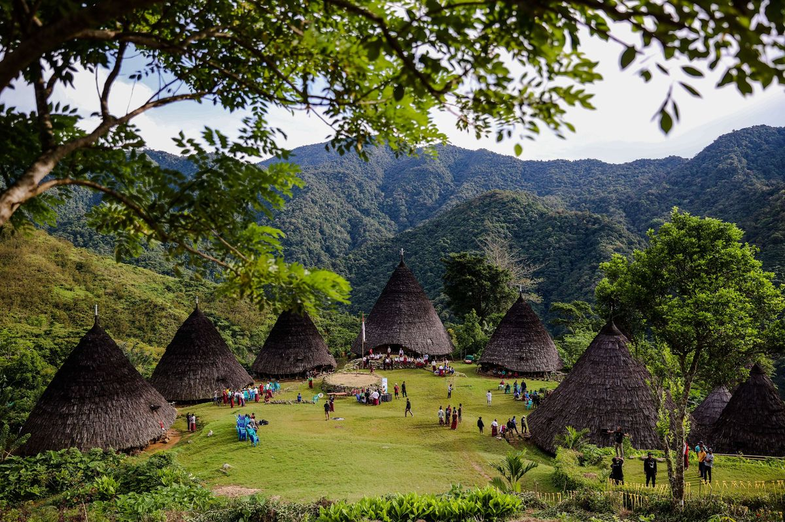
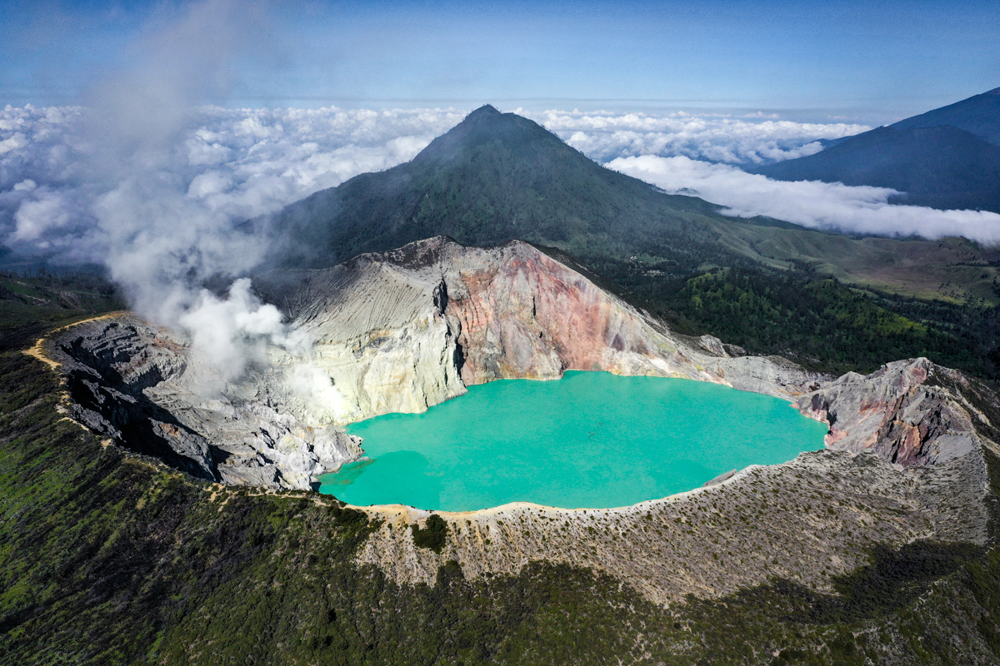
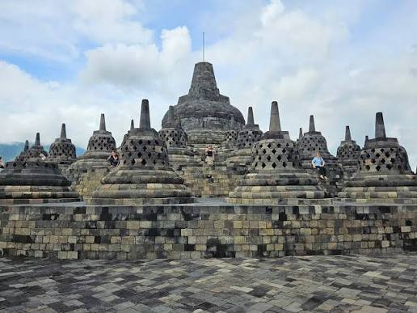

JELAJAH WISATA INDONESIATemukan Keindahan Alam dan Budaya Indonesia |
| Beranda | Wisata | Galeri |
Selamat Datang di Website Jelajah Wisata Indonesia. website ini berisi informsasi mengenai tempat wisata menarik yang ada di Indonesia.
Indonesia memiliki banyak sekali destinasi wisata, mulai dari pegunungan,pantai,laut, hingga budaya.
Berikut adalah objek wisata menarik di Indonesia
|
 Wae Rebo Desa adat di atas awan yang berada di Flores, Nusa Tenggara Timur. |
 Kawah Ijen Gunung dengan fenomena "blue fire" danau asam terbesar di dunia. Terletak di Banyuwangi. |
 Candi Borobudur Candi Buddha terbesar di dunia yang terletak di Magelang, Jawa Tengah. |
Silahkan dengarkan musik berikut sambil menikmati informasi wisata di Indonesia.
Silahkan melihat video berikut sambil menikmati informasi wisata Indonesia.
Contact Person By Yansy Mulyanti Prihartini